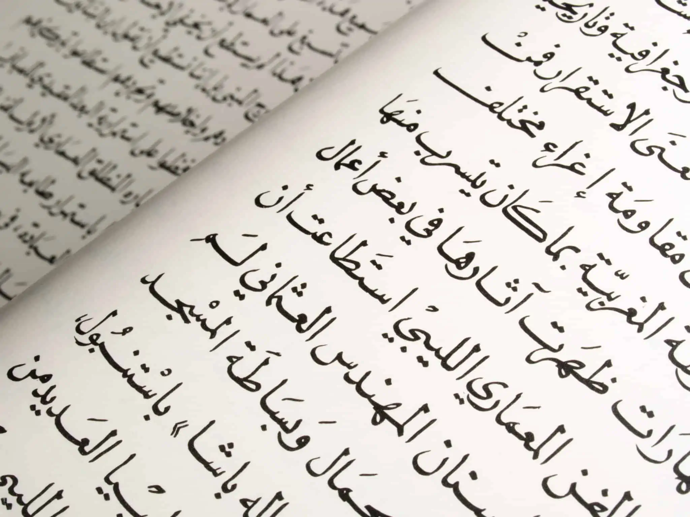

L'Arabe & l'Espagnol
L’arabe est l’une des deux langues officielles du Maroc (aux côtés de l’amazigh), mais il existe notamment plusieurs types d’arabe à discuter. En premier, le darija est « la langue quotidienne des masses, » c'est-à-dire, le dialecte parlé (Jablonka 453). Selon le recensement du Maroc de 2024, le darija est parlé par environ 90 % de la population. C’est la langue utilisée pour la communication informelle et l’interaction sociale. Il existe divers dialectes du darija parlés dans différentes régions. Le darija se distingue des autres dialectes de l’arabe par ses influences tamazight, française et espagnole. Connu pour sa prononciation rapide et sa structure grammaticale unique, il est presque incompréhensible pour les non-arabophones. Ensuite, il existe une deuxième forme d’arabe utilisée dans les contextes formels : l’arabe standard. L’arabe standard est compris par environ 15-20% de la population marocaine (Jablonka 453). Le dialecte est utilisé dans les affaires administratives et gouvernementales, les journaux, les contextes religieux et enseigné dans les écoles. Notamment, l’arabe standard est une langue écrite que les gens ne parlent pas au quotidien.
Il faut noter que pendant de nombreuses années, l’espagnol a été l’une des langues parlées au Maroc. Comme mentionné précédemment, le protectorat espagnol couvrait les zones nord et sud du pays. La proximité géographique de l’Espagne explique également les taux linguistiques. Cependant, le pourcentage d’hispanophones au Maroc a diminué régulièrement : en 2005, 21% de la population parlait espagnol, alors qu’aujourd’hui seulement 5%. Dans une étude sur la présence linguistique de l’espagnol à Tanger, la chercheuse Lotfi Sayahi explique une possible raison de la baisse des taux: « Since the conditions for the development of this type of competence disappeared almost fifty years ago, there are no younger speakers of this type as their number gradually declines » (Sayahi 60). Actuellement, la majorité des hispanophones sont de générations plus âgées car le lien avec le protectorat espagnol s’éloigne de plus en plus dans le passé.
Page d'accueil